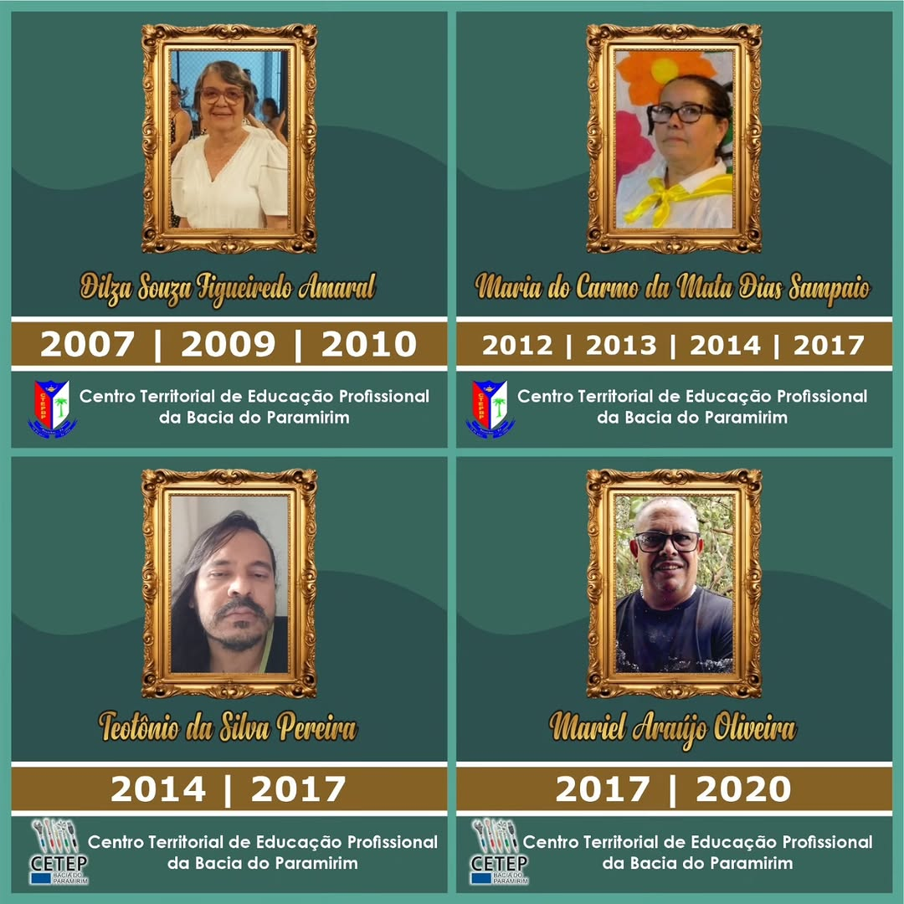
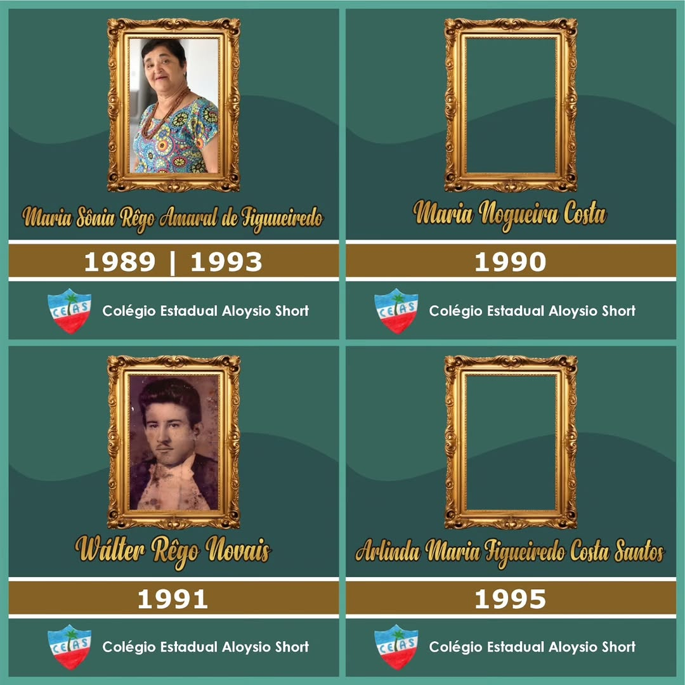
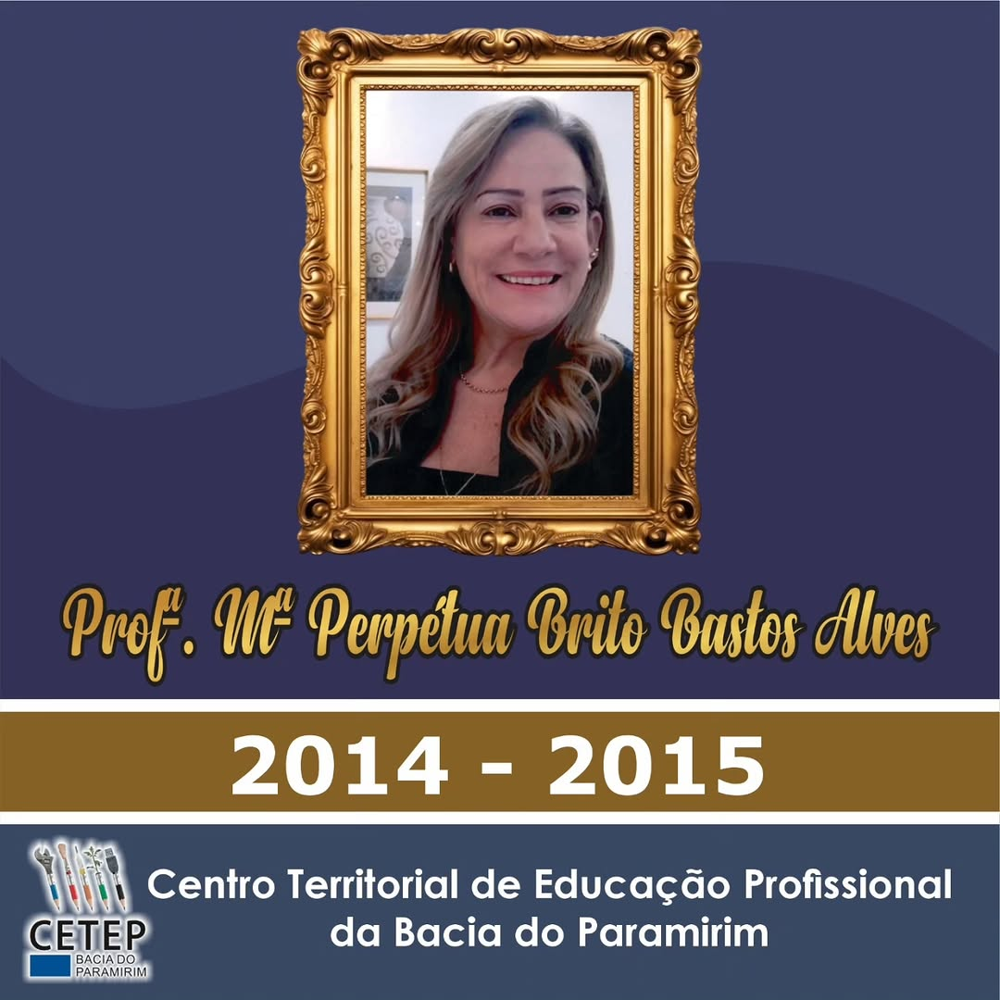

Técnico
Informática
Desenvolvimento de sistemas, redes, lógica e cultura digital, com foco em soluções para problemas reais.
- Programação e banco de dados
- Redes e suporte
- Projetos e portfólio
Educação técnica pública com foco no futuro
O CETEP é um colégio técnico que fortalece o acesso ao conhecimento, ao trabalho e a direitos. Aqui, a aprendizagem é prática, inclusiva e conectada com as necessidades da comunidade.
Rotina, projetos e vivências do CETEP (conteúdo da pasta
assets).
Uma instituição de ensino técnico que amplia oportunidades e fortalece a cidadania por meio da educação.
O CETEP é um colégio técnico voltado para a formação de estudantes com base científica e prática. Nossa proposta é simples e objetiva: ensinar com qualidade, apoiar o desenvolvimento dos jovens e conectar a escola às demandas do mundo do trabalho.
Assim como políticas públicas que garantem acesso a direitos, acreditamos que a educação técnica é um caminho concreto para ampliar autonomia, renda e participação social.
Oferecer educação técnica pública, acessível e de qualidade, formando profissionais éticos e preparados para a vida, para o trabalho e para a comunidade.
Ser referência regional em educação técnica, inovação e inclusão, contribuindo para o desenvolvimento sustentável de Macaúbas e do território.
Trilhas formativas voltadas para competências técnicas, projetos e preparação para o mercado de trabalho.
Desenvolvimento de sistemas, redes, lógica e cultura digital, com foco em soluções para problemas reais.
Organização, gestão e empreendedorismo, com base em práticas de escritório, finanças e atendimento.
Formação com foco em cuidado, ética e procedimentos, valorizando a saúde como direito e serviço essencial.
Observação: os cursos acima são exemplos. Ajuste os nomes e descrições conforme a oferta real do CETEP.
O que você encontra no CETEP: acolhimento, prática, projetos e orientação para o futuro.
Projetos, oficinas e atividades que desenvolvem competências para o mercado e para a vida.
Orientação pedagógica e acompanhamento para reduzir barreiras e fortalecer trajetórias.
A escola participa de iniciativas locais e promove ações que valorizam o território.
Currículo orientado a competências, com foco em empregabilidade e autonomia.



Iniciativas criadas no CETEP para aprender na prática e gerar impacto: comunicação, tecnologia e conexão com o território.
Um espaço para conversas simples e diretas sobre educação, projetos, experiências estudantis e temas importantes para a comunidade.
Produção estudantil: comunicação, roteiro, edição e divulgação.
Ferramenta criada pelos alunos para praticar formulários, validação e integração com API pública (ViaCEP).
Projeto de tecnologia com foco em acessibilidade e retorno claro para o usuário.
Um espaço para publicar notícias, relatos de projetos, eventos e boas práticas do dia a dia escolar.
Produção textual com linguagem simples, objetiva e informativa.
Referência institucional e territorial importante para projetos educacionais, cultura local, meio ambiente e desenvolvimento regional.
Link oficial: Consórcio de Desenvolvimento Sustentável da Bacia do Paramirim (CDSBP).
Educação técnica como motor de desenvolvimento e permanência do jovem no território.
Macaúbas, no interior da Bahia, é uma cidade marcada pela força do seu povo, pela cultura local e pela busca por oportunidades que valorizem a juventude. Em regiões como a nossa, a escola é uma ponte direta entre sonho e realidade.
Quando a formação técnica está disponível perto de casa, ela amplia perspectivas, fortalece a economia local e apoia famílias na construção de trajetórias com mais estabilidade.
Quer estudar no CETEP ou tirar dúvidas sobre matrículas e cursos? Envie uma mensagem.